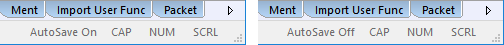
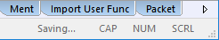
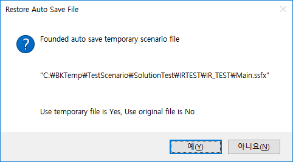

| 자동 저장 | 시작 다음 이전 |
수정된 시나리오 파일이 있을경우 설정한 체크 주기마다 자동으로 저장합니다. 자동 저장은 프로젝트 파일을 오픈 하였을 경우만 작동하며, 시나리오 파일만 열었을 경우는 자동저장 체크를 하였어도 자동저장하지 않습니다. 사용자가 저장버튼을 누르거나, 파일을 닫을 때 저장/취소의 여부에 따라 자동저장된 시나리오 파일로 현재 시나리오 파일을 대체 합니다. 자동 저장의 설정은 리본 메뉴 Tools > Options > Application > Auto Save 에서 설정 할 수 있습니다.
자동 저장 설정정보 표시

자동 저장 작동

자동 저장후 ForCusStudio 다운
- ForCusStudio 를 재 실행하고 프로젝트를 오픈하면 저장된 시나리오 파일로 복구할지 여부를 결정할 수 있습니다. 예(Y)를 누르면 자동저장된 파일로 복구가 되고, 아니오(N)를 누르면 자동저장된 파일은 삭제되며, 이전 원본 파일을 다시 로드합니다. - 자동저장된 시나리오 파일이 여려개면 예(Y), 아니오(N)를 누르면 다음 시나리오 파일도 아래와 같은 질의 창이 출력됩니다.

|
| Copyrights(C) Bridgetec.co.kr. All Rights Reserved | 시작 다음 이전 |